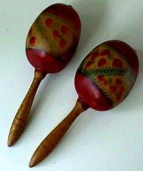

Maracas called Rumba shakers, shac-shacs, and various other names, are
rattles which appear in many genres of Caribbean and Latin music. Players hold
them by their handles, usually in pairs, and shake them. Maracas can't be tuned.
Maracas , also known as Tamaracas, were rattles of divination, an oracle of the
Brazilian Tupinamba Indians, found also with other Indian tribes (Garifuna,
Guarani), and on the Orinoco and in Florida.
Rattles made from gourds
(Lagenaria) are being shaken by the natural grip, while the round calabash
(Crescentia) fruits are fitted to a handle. Human hair is sometimes fastened on
the top, and a slit is cut in it to represent a mouth, through which their
shamans (payes) made it utter its responses.
A few pebbles are inserted to make
it rattle, and it is crowned with the red feathers of the Goaraz. Every man had
his maraca. It was used at their dances, and to heal the sick.Andean curanderos
(healers) use maracas in their healing rites.

Modern maraca balls are also made of leather, wood, or plastic